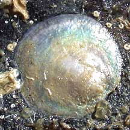
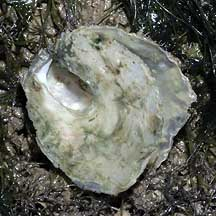
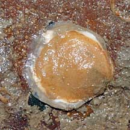
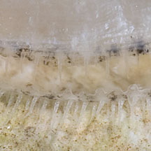
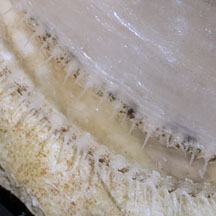

|
|
| bivalves text index | photo index |
| Phylum Mollusca > Class Bivalvia > Family Anomiidae |
| Under-a-stone
jingle clam awaiting identification Family Anomiidae updated May 2020 Where seen? Like shiny coins, this clam is sometimes seen under stones on our Northern shores. Sometimes also seen stuck to other hard shelled animals like Window pane shells (Placuna sp.). Shells of dead animals are also often washed ashore. Features: 2-3cm. The two-part shell is thin and lustrous. Usually circular, often white or pinkish. One valve is stuck to a hard surface and this is usually flat. The other valve is slightly convex. When submerged, the animal has a fringe of translucent tentacles around the shell opening. If you look at the shell of a dead animal, the side that is stuck to the surface usually has a hole in it. The animal secretes byssus threads through this hole to stick to surface. Initially, this opening is a notch on the edge of the shell. But as the animal grows and secretes more shell material, the notch is surrounded and becomes a hole. |
 Chek Jawa, Jun 02 |
 Notch in one of the valves is clearly seen in the shell of this dead animal Pulau Sekudu, Jun 06 |
 Pulau Semakau, Apr 08 |
|
 Fringe of tentacles when submerged. |
 |
| Under-a-stone jingle clams on Singapore shores |
On wildsingapore
flickr
|
References
|